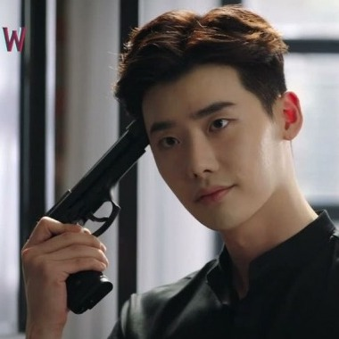

Title: W: Two Worlds Apart / 더블유
Genre: Thriller, Comedy, Romance, Fantasy
Episodes: 16
Broadcast Network: MBC
Release date: July 20, 2016
Director: Jeong Dae-yun
Following the death of his family in an accident, loner Cha Hyun Soo moves to a new apartment. His quiet life is soon disturbed by strange incidents that start occurring in his apartment, and throughout Korea. As people start to turn into monsters, Hyun Soo and the other residents try to survive.

Lee Jong-suk
as Kang Chul

Han Hyo-joo
as Oh Yeon-joo

Lee Tae-hwan
as Seo Do-yoon

Jeong Yoo-jin
as Yoon So-hee
Lee Si-eon
as Park Su-bong
Kim Eui-sung
as Han Sang-hoon
Park Won-sang
as Han Cheol-ho
Heo Jung-do
as Park Min-soo